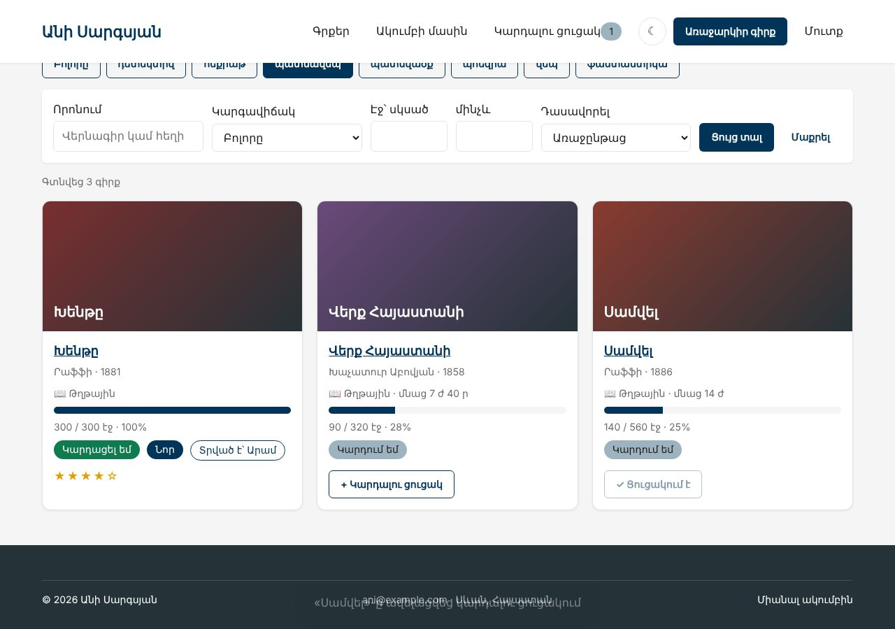
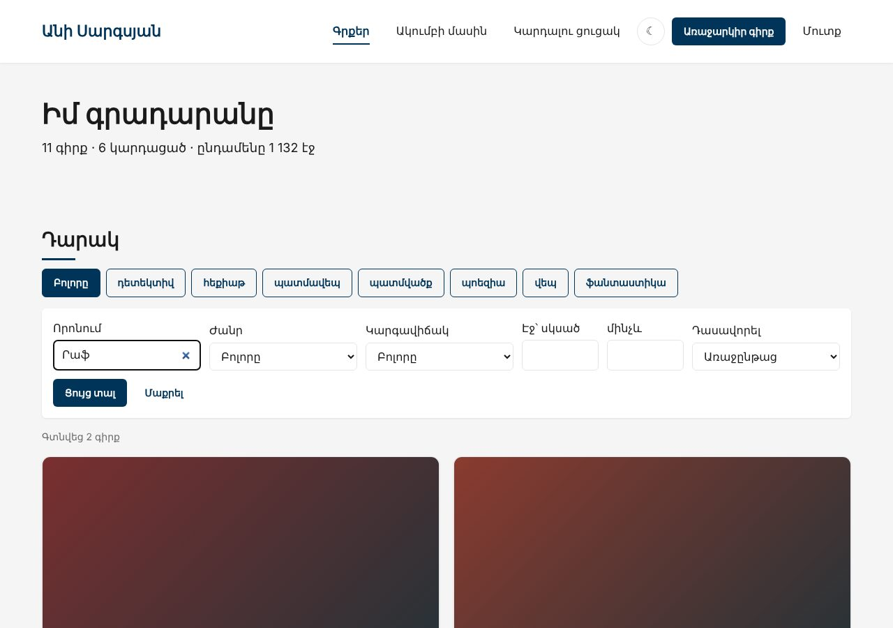
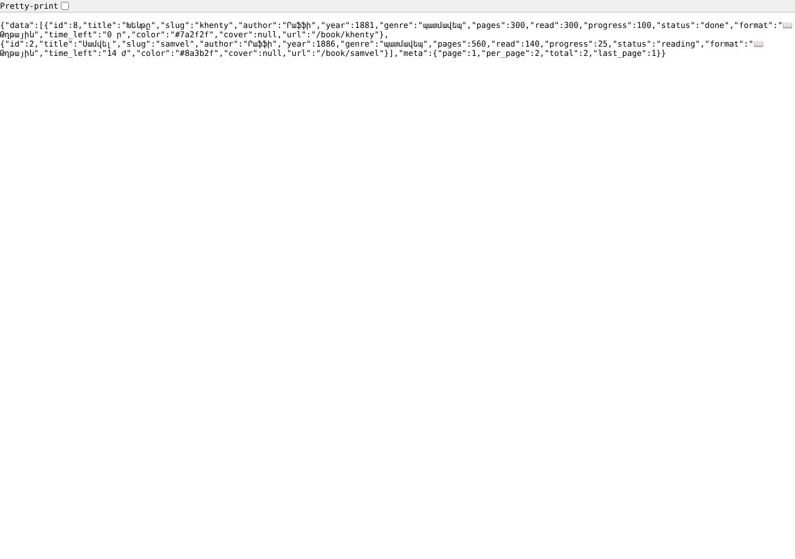

Տնային աշխատանք · PHP Դաս 17 · մինի-նախագիծ
Կայքը ստանում է API՝ /api/books, /api/list։ «+ Կարդալու ցուցակ»-ը աշխատում է առանց էջի վերբեռնման, իսկ որոնումը թարմացնում է դարակը գրելու ընթացքում։ Առանց JavaScript-ի նույն կոճակները և ֆորմաները շարունակում են աշխատել․ JS-ը միայն լավացնում է։
Դաս 01–17 և JS բլոկը․ Response::json, json_encode (JSON_UNESCAPED_UNICODE), php://input, X-CSRF-Token header, 201/404/419/422, toArray(), fetch, AbortController, debounce, ES մոդուլներ։ Laravel՝ Դաս 18։



$ curl "http://localhost:8000/api/books?q=Րաֆֆի&per_page=1"
{
"data": [
{
"id": 8,
"title": "Խենթը",
"slug": "khenty",
"author": "Րաֆֆի",
"year": 1881,
"genre": "պատմավեպ",
"pages": 300,
"read": 300,
"progress": 100,
"status": "done",
"format": "📖 Թղթային",
"time_left": "0 ր",
"color": "#7a2f2f",
"cover": null,
"url": "/book/khenty"
}
],
"meta": {
"page": 1,
"per_page": 1,
"total": 2,
"last_page": 2
}
}
$ curl -i -X DELETE http://localhost:8000/api/list/items/2
HTTP/1.1 419 Unknown Status Code
{"error":{"message":"Ձևաթուղթը ժամկետանց է։ Թարմացրու էջը և փորձիր կրկին։"}}
$ curl "http://localhost:8000/api/books?per_page=-5&page=abc" # meta
{"page": 1, "per_page": 1, "total": 11, "last_page": 11}
$ curl -X POST http://localhost:8000/lab-json.php -H "Content-Type: application/json" -d '{"id": 2}'
Content-Type: application/json
$_POST = array(0) {
}
php://input = {"id": 2}== json_encode($user)՝ ամեն public դաշտ, ՆԱԵՎ հեշը ❌
{"id":1,"email":"ani@example.com","name":"Անի","role":"admin","passwordHash":"$2y$10$CxxIjyzVQ5vj6wPgcrUDhe090rCqrbz917n24TaUdoNh4NGnQcVvG"}
== json_encode($book) և $book->toArray()
{"id":2,"title":"Սամվել","slug":"samvel","author":"Րաֆֆի","year":1886,"pages":560,"read":140,"genre":"պատմավեպ","rating":0,"color":"#8a3b2f","link":"https:\/\/hy.wikipedia.org\/w\/index.php?search=Սամվել+Րաֆֆի","cover":null,"createdAt":"2026-09-03 10:00:00","lentToName":null}
{"id":2,"title":"Սամվել","slug":"samvel","author":"Րաֆֆի","year":1886,"genre":"պատմավեպ","pages":560,"read":140,"progress":25,"status":"reading","format":"📖 Թղթային","time_left":"14 ժ","color":"#8a3b2f","cover":null,"url":"\/book\/samvel"}
== array_filter → բանալիները՝ 0
["1984"]… ← օբյեկտ {}
["1984"]… ← զանգված [] (array_values)Շարունակիր քո նախագիծը։ Եթե բաց ես թողել նախորդ դասը, սկսիր Դաս 16-ի օրինակից։
starter/public/js/ui.js — escapeHtml, debounce, showToast՝ JS բլոկից| Գործարկել |
|---|
composer install && php -S localhost:8000 -t public public/index.php |
Request::fromGlobals()՝ JSON մարմին php://input-ից․ $_POST-ը դատարկ է (տնային 4)header('X-CSRF-Token'), expectsJson()Response::json(), Router::delete()GET /api/books?q=&page=&per_page=՝ data + metaper_page՝ 1–50, page=abc → 1 (տնային 9)Book::toArray()՝ ՄԵՆՔ ենք որոշում, ինչ ցույց տալ (տնային 5)public function index(Request $request): Response
{
$filters = BookRepository::filtersFrom($request->allQuery());
$sort = $request->query('sort');
$sort = isset(BookRepository::SORTS[$sort]) ? $sort : 'progress';
$page = max(1, $request->int('page', 1)); // ?page=abc → 1 (տնային 9)
$perPage = min(self::MAX_PER_PAGE, max(1, $request->int('per_page', 6))); // ?per_page=-5 → 1, 1000 → 50
$total = $this->books->count($filters);
$found = $this->books->search($filters, $sort, $perPage, ($page - 1) * $perPage);
return Response::json([
// array_map-ը պահում է 0, 1, 2 բանալիները → JSON զանգված [...]։
// array_filter-ից հետո բանալիները կարող են լինել 0, 2 → JSON օբյեկտ {"0":..,"2":..} (տնային 6)
'data' => array_map(fn(Book $b): array => $b->toArray(), $found),
'meta' => [
'page' => $page,
'per_page' => $perPage,
'total' => $total,
'last_page' => max(1, (int) (($total + $perPage - 1) / $perPage)),
],
]);
}GET /api/list՝ գրքեր, նպատակ, մնացած էջեր (տնային 2)POST /api/list/items → 201 կամ 422DELETE /api/list/items/{id}՝ առանց token-ի 419 (տնային 3)<form data-list-add>՝ դելեգացիա document-ի վրաform.submit()async function request(url, options = {}) {
const response = await fetch(url, {
...options,
headers: {
"Accept": "application/json",
"X-CSRF-Token": csrf, // ⭐ առանց սրա POST-ը և DELETE-ը կստանան 419
...(options.body ? { "Content-Type": "application/json" } : {}),
},
});
const payload = await response.json();
// fetch-ը 4xx/5xx-ի դեպքում ՉԻ գցում սխալ․ ok-ը ստուգում ենք ինքներս
if (!response.ok) {
throw new ApiError(payload.error?.message ?? "Սխալ", response.status);
}
return payload;
}input + debounce 300 մվ, AbortControllerescapeHtml()-ովhistory.replaceState՝ հասցեն համընկնում է արդյունքի հետ (տնային 7)public/lab-json.php՝ json_encode($user)-ը ցույց է տալիս հեշը (տնային 5), array_filter-ից հետո օբյեկտ (տնային 6), $_POST-ը JSON-ի դեպքում (տնային 4)DELETE առանց token-ի՝ 419 JSON/api/books/nope՝ 404 JSON, ոչ HTMLpassword_hash կամ is_active| Սխալ | Ինչպես ուղղել |
|---|---|
Unexpected token < JS-ում | Սխալը վերադարձավ HTML-ով․ /api/-ի համար պետք է JSON (expectsJson()) |
| POST-ը միշտ 419 | fetch-ը չի ուղարկում X-CSRF-Token, կամ <meta name="csrf-token">-ը չկա |
$_POST['id']-ը null է | JSON-ի դեպքում կարդա php://input |
| Հին որոնման պատասխանը գալիս է նորից հետո | controller?.abort() նոր հարցումից առաջ |
Սրանք Դաս 17-ի տնային աշխատանքի կետերն են։ «մինի-նախագծում» նշվածները արդեն կատարել ես վերևի քայլերում՝ Անիի ակումբում։ Մնացածը կատարիր ՏեխնոՄարկետում, ինչպես գրված է դասում։
curl փորձարկումը։ Ուղարկիր սքրինշոթներ։ մինի-նախագծումGET /api/cart՝ վերադարձնում է զամբյուղի տողերը գումարով։ Օգտագործիր findMany-ը (Դաս 14)։ մինի-նախագծումDELETE /api/cart/items/{id} և ստուգիր, որ առանց token-ի 419 է։ մինի-նախագծում$_POST-ի դատարկության թակարդը՝ var_dump($_POST) JSON հարցումի ժամանակ։ մինի-նախագծումtoArray()-ի փոխարեն օգտագործես json_encode($product)։ Ավելացրու public $costPrice և տես։ մինի-նախագծումarray_map-ը array_filter-ով և ցուցադրիր, ինչպես է data-ն դառնում օբյեկտ։ մինի-նախագծում/api/products?q=... որոնում և JS ֆայլ՝ debounce-ով, որը թարմացնում է ցուցակը ինչպես JS բլոկի որոնման դասում։ մինի-նախագծում?per_page=-5 և ?page=abc։ Ի՞նչ է վերադարձնում API-ն։ մինի-նախագծումԵրբ բաժին 03-ի բոլոր կետերը նշված են, բացիր օրինակը։ Օրինակում lab-… ֆայլերը փորձնական են․ դրանք հաջորդ դասի օրինակում այլևս չկան։ Գործարկելուց առաջ ստեղծիր բազան example/sql/-ի ֆայլերով և .env-ը (composer install)։ Գտիր մեկ բան, որ դու արել ես այլ կերպ, և մտածիր՝ որն է ավելի հասկանալի և ինչու։ Քո լուծումը կարող է տարբերվել և լինել ճիշտ։